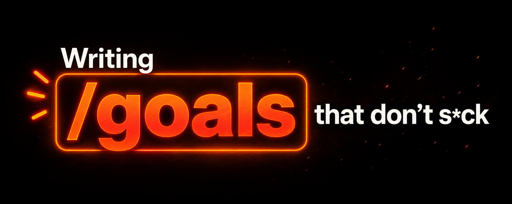

The Goal
≤ 4,000 characters · pastes into /goal
- What to do, ending in one headline word
- What to read first (absolute paths)
- Posture — what must not change
- Verification the agent can run and show
- A stop condition, with a turn cap
A skill for Claude Code & OpenAI Codex

You hand an AI agent a goal and walk away; it works until the job is provably done. Most goals wander because the /goal box only holds 4,000 characters. Goal Writer drafts the two files that fix it — a tight goal the agent can't misread, and a companion that carries everything else.
/goal is, in plain wordsBoth Claude Code and Codex have a /goal command. You give it a finish line — “get the homepage Lighthouse score to 90, stop after 5 tries” — and the agent keeps iterating. Each time it tries to stop, a checker reads your condition and either accepts it or sends the agent back to work. That’s a loop: repeat until a stop condition is met.
Here’s the catch: the goal box only holds about 4,000 characters.
That’s a page and a half — nowhere near enough room for the schemas, file paths, phase plans, and edge cases a real round of work needs. Most people either overstuff the goal (and the agent wanders) or under-specify it (and the agent guesses). Goal Writer solves this by splitting the brief into two files.
The goal is the spine — small enough to paste straight into /goal. The rider is the map — unlimited, and it stays on disk where the agent reads it first. Paste the goal; the rider rides along. The same two files brief Claude Code, Codex, Cursor, or a human reviewer without a single change.
≤ 4,000 characters · pastes into /goal
No size limit · stays on disk
The slash command is the runtime; the pair is the spec. The command dies with your session — the pair is committed to the repo and compounds across every future round.
A loop is just an agent repeating work until it’s told to stop. The Claude Code team names four kinds. Goal Writer’s pair is primitive-agnostic: write it once, and it drives whichever loop the task needs — start with the simplest that fits.
Best for quick, one-off tasks. The rider’s named tests are exactly the “what good looks like” you’d encode to help it self-check.
Best when you know what “done” looks like. The goal body is the condition; the rider is the map. This is the loop Goal Writer is built for.
Best for recurring or external work — a PR that gets reviews, a queue that fills. The same pair is re-fed each tick.
Best for well-defined streams — bug reports, triage, migrations. Each spawned agent consumes the pair as its per-task spec.
Honest footnote: /loop, /schedule, and dynamic workflows are Claude Code features. Codex does the same recurring and proactive work by wrapping headless codex exec in a scheduler like cron or CI. The durable unit — /goal plus the pair — is shared by both.
Ask for a goal and the skill does the prep that makes a loop finish the right thing — no coding required from you.
Architecture docs, prior goal+rider pairs, recent commits, and the source as it stands today. It grounds the goal in what’s really there — and asks rather than invents when something’s missing.
One feature, a handful of files, about a day of agent time, named by a single headline word. If it can’t pick one word, that’s two rounds — and it splits them.
The 4,000-character limit is the forcing function: it makes the skill decide what the goal is before writing it. Verification is written so the agent must run each check and show the output — not just claim success.
A phased plan with named tests written before the code, posture invariants, error messages that end in a try: command, and an explicit out-of-scope list so the round stays shippable in a day.
A bundled script checks the size cap, phase count, required sections, that the two files cite each other, and that they share one timestamp. Then you paste the goal into /goal and close the laptop.
The pair is written to satisfy both checkers at once — so one artifact runs unchanged whether the smart model designs and Codex builds, or Claude Code does both.
A small, fast model reads the transcript after each turn and judges your condition. It never runs tools — so every check has to be something the agent’s own output can show.
Goal Writer writes verification that way by default: run the command, surface the result.
Codex re-injects the full objective every turn and runs a completion audit — mapping every requirement, artifact, and test to real evidence before it accepts “done.”
Precise, enumerable requirements close the round; vague ones stall it. The rider makes them precise.
One installer copies the skill into both harnesses. Then invoke it with your idea and let it draft the pair.
# clone and install for Claude Code + Codex git clone https://github.com/NicholasSpisak/goal-writer.git cd goal-writer ./install.sh # both harnesses, user-level
/goal-writer harden the webhook handler
against replay attacks
$goal-writer harden the webhook handler
against replay attacks
It reads your project, drafts the goal and rider into docs/goals/, validates them, and tells you how to start the round. Then you paste the goal body into /goal in either tool.
AI Operator Academy
Goal Writer is one piece of a bigger practice — designing loops, briefing agents, and shipping real work. Come build with the community.